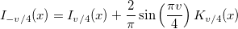
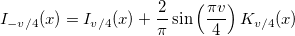
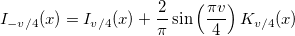

/math-4fdefba26320686bb2bd0579a0df421c.png "\nu") /4 (x), where the order v=-3, -2, -1, 1, 2 or 3 and x is real and positive. For positive orders it may also be called with x=0, since I/4 (0)=0 when v>0. For negative orders the formula  is used.
/4 (x), where the order v=-3, -2, -1, 1, 2 or 3 and x is real and positive. For positive orders it may also be called with x=0, since I/4 (0)=0 when v>0. For negative orders the formula  is used. evaluates an approximation to the modified Bessel function of the first kind I/4 (x), where the order v=-3, -2, -1, 1, 2 or 3 and x is real and positive. For positive orders it may also be called with x=0, since I/4 (0)=0 when v>0. For negative orders the formula  is used.
For more information please review the s18eec function in the NAG document.